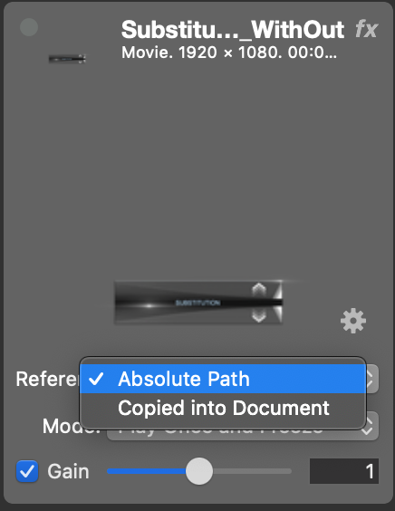
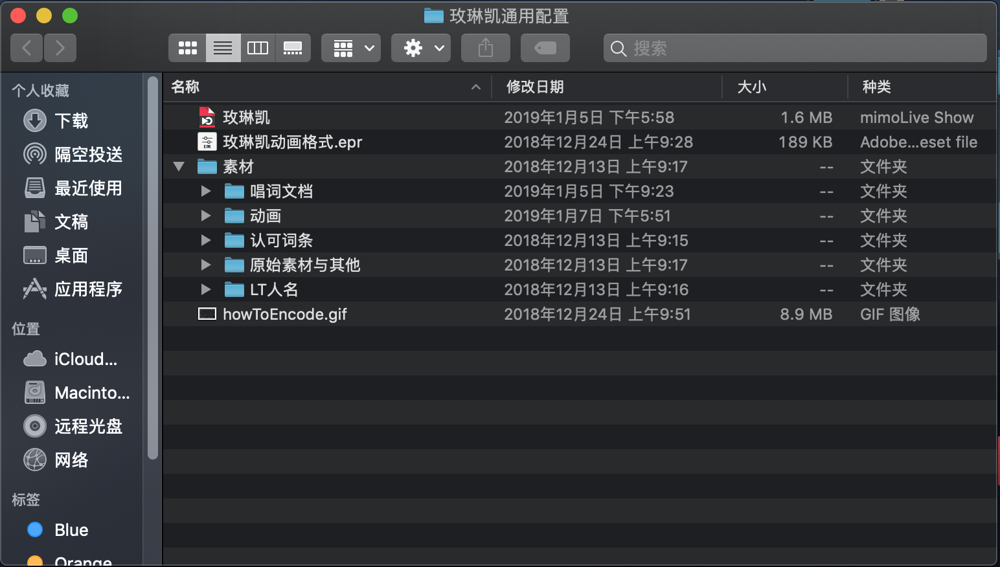

素材关联
两种引用模式
素材导入文档可以有两种引用模式：拷贝到文档 "Copied into Document" 和 路径引用"Absolute Path"。

在不同情况下选择不同模式：
拷贝到文档：素材文件较小时，不需要再修改的素材，工程文档需要多人间分享时
引用路径：素材文件较大时，素材文件后续可能需要使用其他软件频繁修改时，不需要与他人分享时
一般情况下，选择路径引用模式，这样素材的改动并不需要重新导入，只需要重启该工程文档即可同步更新。建议在某一路径下建立工程文件夹，将素材和文档统一存储和管理起来。例如下图：

需要注意的是：由于mimolive引用的是绝对路径，整个工程文件夹的位置一旦确定就不要改动。
四种播放模式

Play Once：单次播放并播放完后消失
Loop：循环播放
Play Once and Freeze：单次播放并停在最后一帧
Play, Pause and Freeze：控制播放模式（目前不使用）
选择多个素材
选中一个素材，按住 command⌘再选择其他需要多选的素材。
选中一个素材，按住Shift⇧再选择另一素材，此时两素材之间的所有素材都会被选中。
素材重命名
双击素材名称
素材折叠/展开
选中需要折叠/展开素材，右键 "Collapse/Expand Source"
素材组
极大方便素材的分类，选择添加素材 "Source Group" 或 选中多个需要归组素材右键选择 "New Group with Selections"
选取视频素材的一部分播放
注：此功能需要4.6版本及以上
点击图中按钮


拖拽选择开始帧和结束帧。选择需要播放的范围。